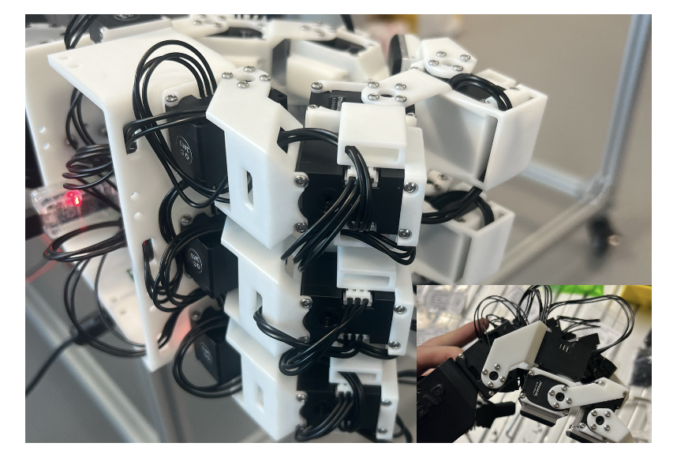
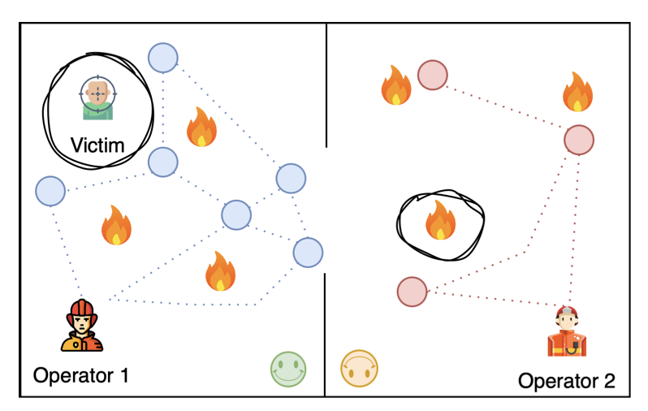
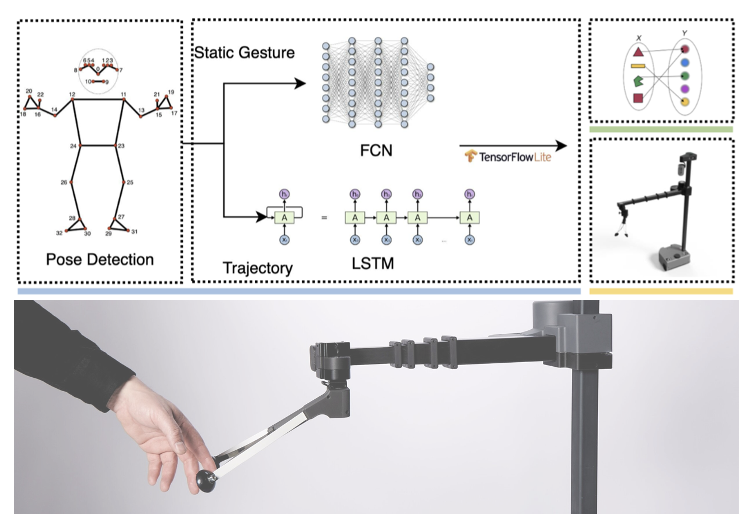
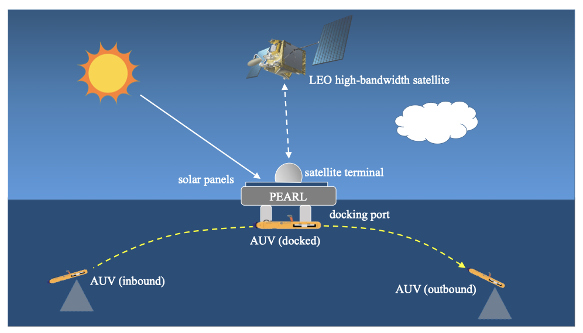
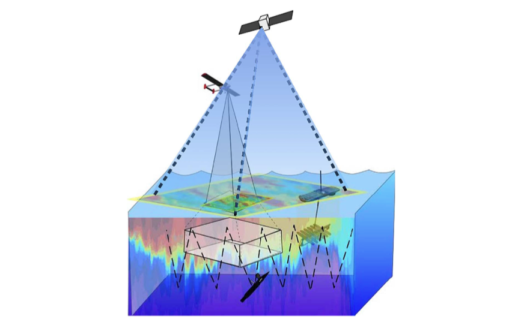

|
Jinzhou Li I’m a Visiting Research Student at the Center on Frontiers of Computing Studies (CFCS) in the School of Computer Science at Peking University, supervised by Prof. Hao Dong. I completed my master's degree at Cornell University, where I was fortunate to be advised by Prof. Maha Haji. Additionally, I had the opportunity to work with Prof. Daniel Hastings. Prior to this, I studied Computer Science & Information Systems at the University of Vermont and Johns Hopkins University. |

Photographed in Maryland, 2022 |
PublicationMy objective is to develop robots with human-like dexterity that can operate effectively in diverse environments, such as homes, hospitals, etc. My research interests include robot learning, dexterous manipulation, representation learning. * Equal Contribution |

|
Adaptive Visual-Tacile Fusion with Predictive Force Attention for Dexterous Manipulation
Jinzhou Li*, Tianhao Wu*, Jiyao Zhang, Zeyuan Chen, Haotian Jin, Mingdong Wu, Yujun Shen, Yaodong Yang, Hao Dong Preprint, 2025 arXiv, website We propose a force-guided attention fusion module that adaptively adjusts the weights of visual and tactile features. |

|
Canonical Representation and Force-Based Pretraining of 3D Tactile for Dexterous Visuo-Tactile Policy Learning
Tianhao Wu, Jinzhou Li*, Jiyao Zhang*, Mingdong Wu, Hao Dong IEEE International Conference on Robotics and Automation (ICRA), 2025 arXiv, website, code We propose novel 3D tactile data representation and force-based pretraining to enhance dexterous manipulation learning. |

|
HGIC: A Hand Gesture-Based Interactive Control System for Efficient and Scalable Multi-UAV Operations
Jinzhou Li, Mengsha Hu, Lei Xu, Yibei Guo, Rui Liu IEEE RO-MAN 2024, Paper IEEE MRS 2023, Poster Presentation arXiv, code We propose a hand gesture-based interactive control system for efficient and scalable multi-UAV operations. |
Robotics Project |
|

|
Multi-Fingered Hand with Integrated Tactile Sensors
Zhengxiao Han, Jinzhou Li We redesigned the dexterous hand based on the Leap Hand, enabling it to be equipped with tactile sensors. Special credits to Zhengxiao!!! |
|

|
Multi-Operator Control and Human Response: Understanding the Diverse Emotional Reactions to Swarm Behavior
Jianyi(Jackie) Yao, Jinzhou Li ECE 6680 Final Project, 2023 advisor: Kirstin Hagelskjaer Petersen We focus on the challenges and potential of integrating multiple human operators with swarm robotics systems. |
|

|
Effects of Greeting Gesture on Robot Acceptance
Jinzhou Li, Jiayuan Fu, Yunting Yan, Yichen Guo CS 6754 Final Project advisor: Prof. Guy Hoffman Hardware: Hello Robot Stretch RE1 We study how nuanced social behaviors in robotics impact acceptance. Politeness in robotic interactions is crucial in settings with social etiquette. |
System Research |
|

|
Hybrid Agent-Based Model and Discrete Event Simulation to Optimize AUV Fleet Operations
M.Eng Research Project advisor: Prof. Maha Haji Develop an agent-based model and discrete event simulation to co-optimize the operations of a system of systems comprised of autonomous servicing platforms (PEARL), LEO satellite constellations, and autonomous underwater vehicles (AUVs). |
|

|
System of Systems Concept for Effective Oceans to Near Space Observation
M.Eng Research Project advisor: Prof. Maha Haji (Cornell) & Prof. Daniel Hastings (MIT) Develop an agent-based model to find the best dynamic combinations depending on the choice of objective function. |
Professional Activities
|
|
Oct, 2024. Design and source code from Jon Barron's website. |